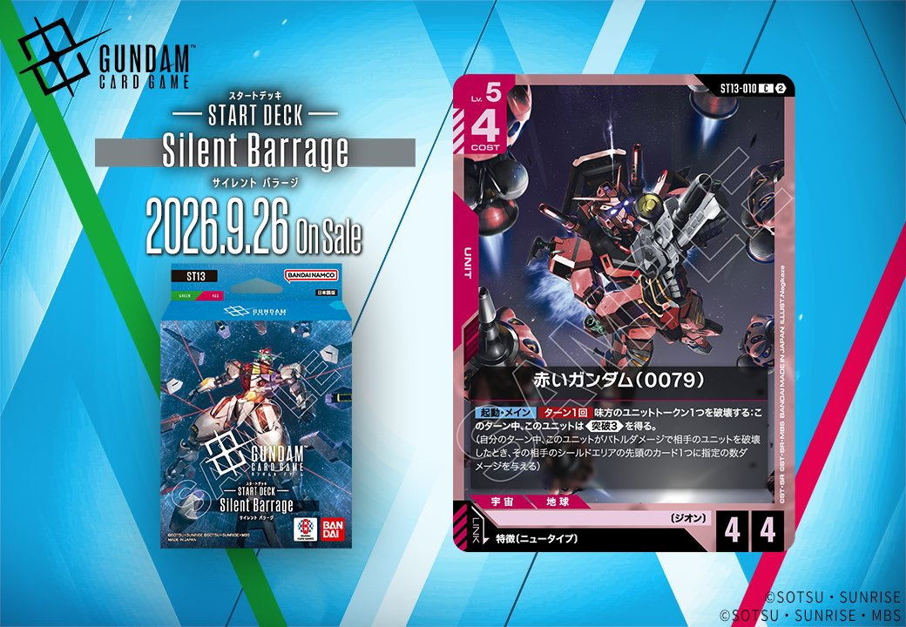
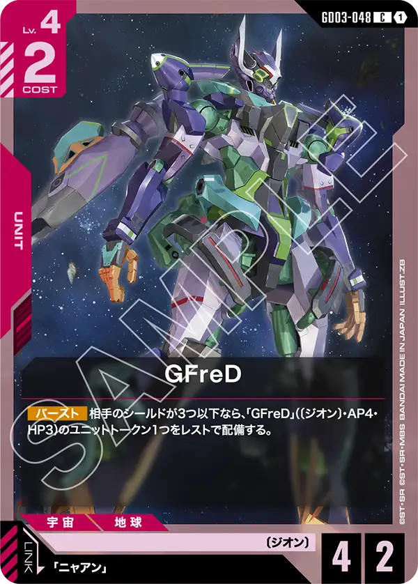

今回は「Generation Pulse(ジェネレーション パルス)」に収録される新カード「赤いガンダム（0079）」（ST13-010）を紹介します。赤色のUNITで、リンク条件として「特徴にニュータイプを持つPILOT」が設定されており、発売日は2026年9月26日です。

赤いガンダム（0079） (ST13-010)
| 色 | 赤 | タイプ | UNIT |
| Lv | 5 | コスト | 4 |
| AP | 4 | HP | 4 |
| 特徴 | 〔ジオン〕 | ||
| リンク条件 | 特徴にニュータイプを持つPILOT | ||
効果: 【起動・メイン】ターン1回 味方のユニットトークン1つを破壊する:このターン中、このユニットは《突破(3)》を得る。(自分のターン中、このユニットがバトルダメージで相手のユニットを破壊したとき、その相手のシールドエリアの先頭のカード1つに指定の数ダメージを与える)
赤いガンダム（0079）はLv.5/コスト4でAP4/HP4の〔ジオン〕ユニット。【起動・メイン】ターン1回で味方のユニットトークン1つを破壊することで、このターン中《突破(3)》を得られ、バトルでの相手ユニット破壊時にシールドへ追撃を狙える。 同日のリンク先である特徴にニュータイプを持つパイロットを搭載すればリンク運用が可能。ユニットトークンの供給源としては、GFreD(GD03-048)の【バースト】で配備される「GFreD」トークンを破壊コストに充てる相互作用が考えられる。 2026-09-26発売。突破付与にトークン破壊という自己コストを要する点をどう賄うかが運用の鍵となる。


関連カード
-
 GFreD(GD03-035)赤系デッキ内採用率13.4% (625デッキ)
GFreD(GD03-035)赤系デッキ内採用率13.4% (625デッキ) -
 ニャアン(GD03-092)赤系デッキ内採用率11.8% (547デッキ)
ニャアン(GD03-092)赤系デッキ内採用率11.8% (547デッキ) -
 ザク・マリナー(GD01-060)赤系デッキ内採用率0.5% (25デッキ)
ザク・マリナー(GD01-060)赤系デッキ内採用率0.5% (25デッキ) -
 ゲルググ（GQ）(ST06-004)赤系デッキ内採用率0.4% (18デッキ)
ゲルググ（GQ）(ST06-004)赤系デッキ内採用率0.4% (18デッキ) -

GFreD(GD03-048)赤系デッキ内採用率0.2% (9デッキ) -
 バナージ・リンクス(ST14-012)NEW緑系 — リンク対象（ニュータイプ PILOT）（新カード）
バナージ・リンクス(ST14-012)NEW緑系 — リンク対象（ニュータイプ PILOT）（新カード） -
 ハマーン・カーン(ST13-011)NEW緑系 — リンク対象（ニュータイプ PILOT）（新カード）
ハマーン・カーン(ST13-011)NEW緑系 — リンク対象（ニュータイプ PILOT）（新カード） -
 シャア・アズナブル(ST11-011)NEW青系 — リンク対象（ニュータイプ PILOT）（新カード）
シャア・アズナブル(ST11-011)NEW青系 — リンク対象（ニュータイプ PILOT）（新カード） -
 セイラ・マス(GD01-087)青系デッキ内採用率0% (2デッキ)
セイラ・マス(GD01-087)青系デッキ内採用率0% (2デッキ) -
セイラ・マス(GD01-087_p1)青系デッキ内採用率0% (0デッキ)